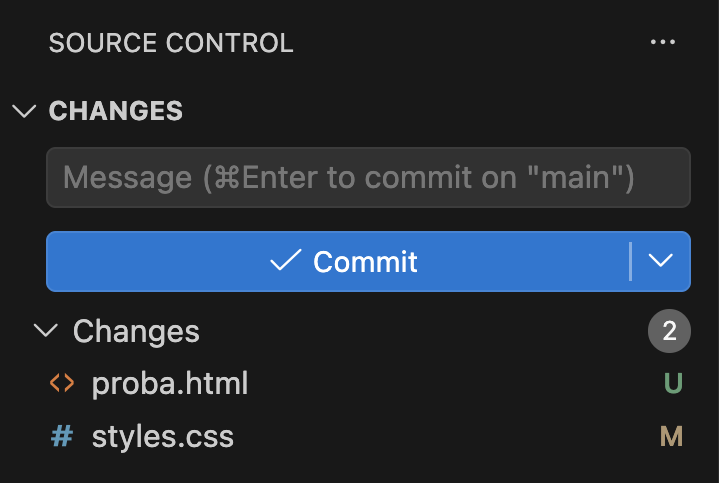
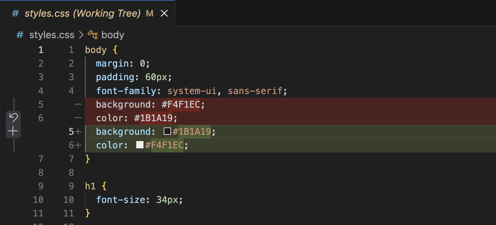
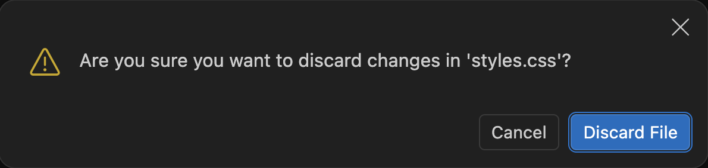
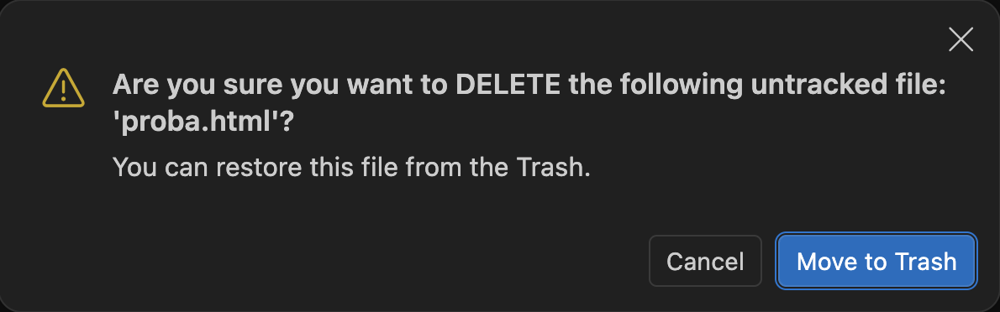
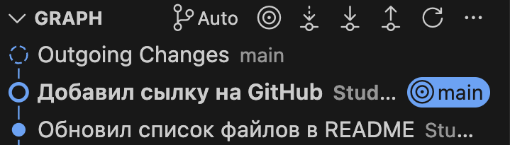
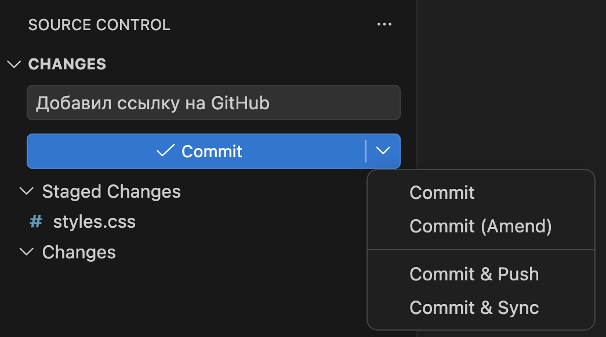
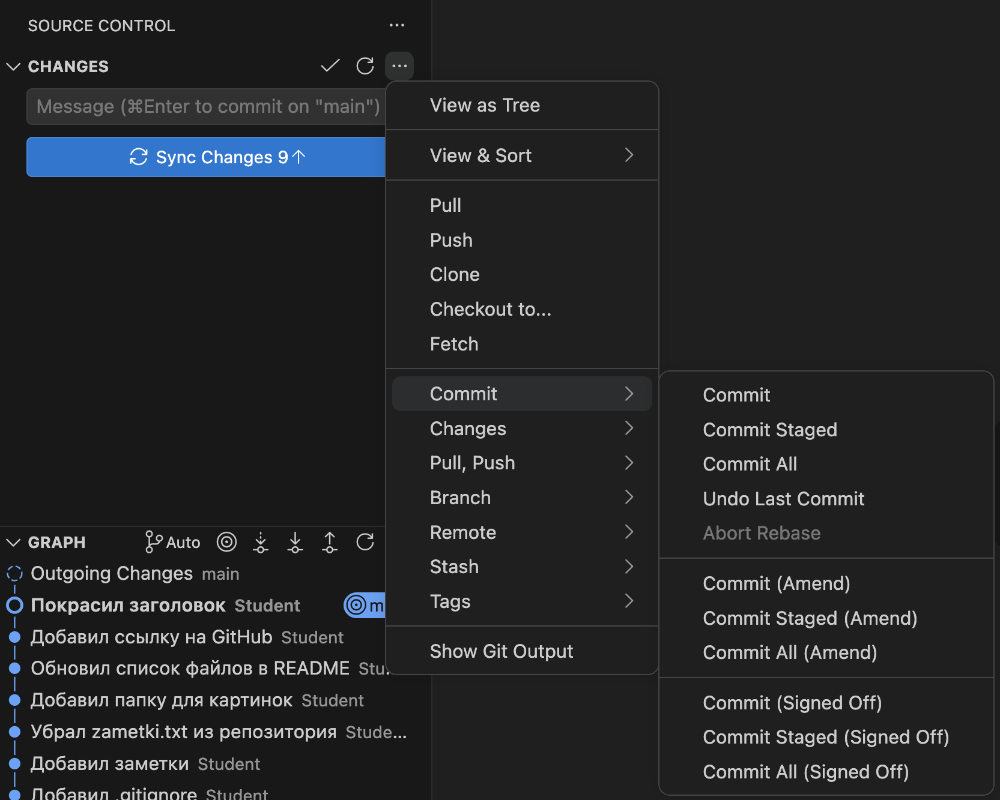
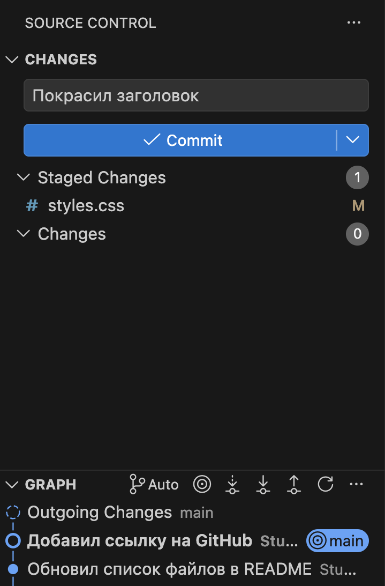
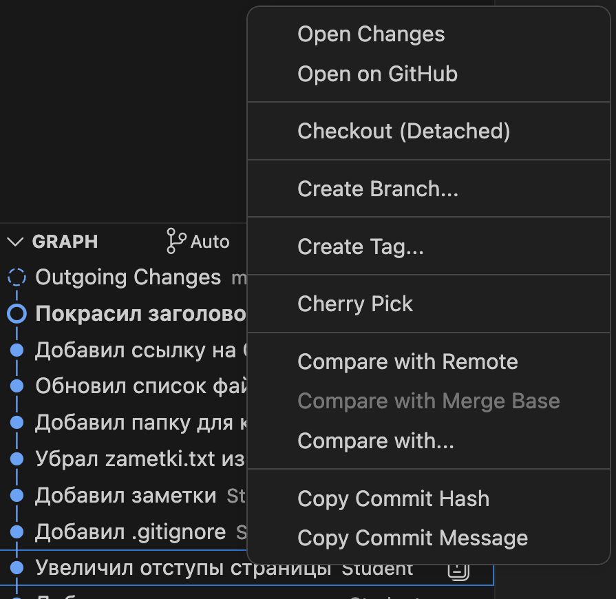
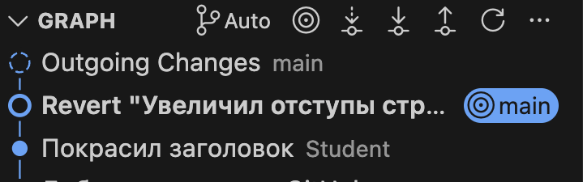

Справочник по Git и GitHub · модуль 2 · первый репозиторий в VS Code
Глава 2.6
Отмена изменений:
discard, amend, revert, reset
В главе разобраны способы отменить сделанное в Git. Какой из них нужен, зависит от того, где находится правка: только в файле, в последнем коммите или в коммите, сделанном раньше. Для каждого способа показаны кнопка в VS Code или команда, что меняется в истории и что можно потерять. В конце — как вернуть коммит, стёртый по ошибке.
- Категория
- Основы работы
- Уровень
- Начальный
- Что получится
- Умение отменить правку, исправить коммит и откатить старый
- Сколько занимает
- Около тридцати минут за компьютером
§1Где находится правка и чем её отменять
В главе 2.3 было показано, что правка проходит три места: рабочую папку, индекс и историю. Отмена устроена так же: способ зависит от того, куда правка успела дойти.
Все способы делятся на две группы. Первые меняют только файлы и индекс, история проекта остаётся прежней. Вторые меняют историю: убирают коммит, заменяют его другим или добавляют новый. Для второй группы действует правило: коммиты, которые уже отправлены на GitHub, не убирают и не заменяют. Их отменяют только новым коммитом.
Зачем это нужно в работе
- Проба не удалась. Поменяли цвета, посмотрели — хуже. Правку нужно выбросить и вернуть файл к последнему коммиту.
- Опечатка в сообщении или забытый файл. Коммит только что сделан, и в нём ошибка. Исправить его проще, чем делать второй коммит «исправил опечатку».
- Правка на сайте оказалась ошибкой. Коммит неделю назад поменял отступы, и теперь их нужно вернуть. Остальные коммиты после него трогать нельзя.
- Что-то стёрто по ошибке. Git записывает в журнал каждое действие с историей, и по этой записи стёртый коммит можно вернуть.
Работаем на проекте sait-vizitka в том виде, в каком его оставила глава 2.5: одиннадцать коммитов, семь из них на GitHub ещё не отправлены.
§2Шаг 1. Отменить правку в файле
Пробуем тёмное оформление. В styles.css в блоке body меняем местами цвета фона и текста:
body {
margin: 0;
padding: 60px;
font-family: system-ui, sans-serif;
background: #F4F1EC;
color: #1B1A19;
}
body {
margin: 0;
padding: 60px;
font-family: system-ui, sans-serif;
background: #1B1A19;
color: #F4F1EC;
}
Заодно создаём в корне проекта файл proba.html, чтобы посмотреть на тёмную тему отдельно. Сохраняем оба файла.
<!doctype html> <html lang="ru"> <body> <h1>Проба тёмной темы</h1> </body> </html>

proba.html (U) и изменённый styles.css (M).Результат не понравился. Нажимаем на styles.css в панели, чтобы увидеть, что будет отменено:

Наводим курсор на styles.css в списке Changes и нажимаем круговую стрелку Discard Changes. VS Code переспрашивает:

Нажимаем Discard File. Файл пропадает из списка, в редакторе снова светлые цвета.
Та же отмена в терминале:
git restore styles.css
Команда ничего не печатает. После неё git status --short не показывает styles.css: файл совпадает с последним коммитом.
Discard перезаписывает файл версией из последнего коммита. Правка в историю не попадала, поэтому Git её не хранит, и в корзину она тоже не попадает. Если среди выбрасываемого есть что-то нужное, сначала сделайте коммит или скопируйте текст. Один участок файла отменяет круговая стрелка в окне сравнения — она рядом со значком Stage Block из главы 2.3.
§3Шаг 2. Удалить новый файл
У proba.html прошлой версии нет: файл новый, в коммитах его не было. Круговая стрелка у такого файла означает удаление. Наводим курсор на proba.html и нажимаем её:

Новый файл VS Code переносит в корзину системы, и оттуда его можно достать. В терминале новый файл удаляет команда git clean. Она стирает файл сразу, минуя корзину:
git clean -f proba.html
§4Шаг 3. Исправить последний коммит
Добавляем на страницу контактов ссылку на профиль GitHub. В kontakty.html под строкой с почтой появляется новая строка:
<h1>Контакты</h1> <p>Почта: student@example.com</p> </body>
<h1>Контакты</h1> <p>Почта: student@example.com</p> <p><a href="https://github.com/MaximBytecamp">Профиль на GitHub</a></p> </body>
В конец styles.css добавляем цвет ссылок:
a {
color: #C2410C;
}
Отбираем плюсом только kontakty.html и коммитим с сообщением «Добавил сылку на GitHub».
В коммите две ошибки: опечатка в сообщении и забытый styles.css. Коммит последний и на GitHub не отправлен, поэтому его можно исправить. Второй коммит для этого не нужен.

kontakty.html.- Отбираем плюсом
styles.css— он войдёт в исправленный коммит. - В поле сообщения пишем правильный текст: «Добавил ссылку на GitHub».
- Нажимаем стрелку справа от кнопки Commit и выбираем Commit (Amend).

Что произошло, видно по имени коммита. Слово HEAD в команде означает коммит, на котором вы сейчас стоите, — в графе он отмечен меткой main:
e4da965 Добавил ссылку на GitHub kontakty.html | 1 + styles.css | 4 ++++ 2 files changed, 5 insertions(+)
До исправления коммит назывался 609b763, после — e4da965. Amend создаёт новый коммит с исправленным содержимым и ставит его на место старого. Имя коммита вычисляется из содержимого (глава 2.4), поэтому новое содержимое даёт новое имя.
То же в терминале: отобрать забытый файл и заменить последний коммит.
git add styles.css git commit --amend -m "Добавил ссылку на GitHub"
Если коммит уже на GitHub, у сервера и у коллег осталась старая версия 609b763, а у вас — новая e4da965. Истории разошлись, и обычная отправка не пройдёт. Поэтому правило такое: amend применяют к коммитам, которые ещё не отправлены. В графе это коммиты выше метки origin/main.
§5Шаг 4. Отменить последний коммит целиком
Задаём цвет заголовку. В styles.css в блок h1 добавляем строку:
h1 {
font-size: 34px;
}
h1 {
font-size: 34px;
color: #C2410C;
}
Сразу коммитим с сообщением «Покрасил заголовок». Потом становится видно, что цвет заголовка совпал с цветом ссылок и их не различить. Коммит сделан рано: правку нужно доработать.
Для этого у раздела CHANGES есть меню. Наводим курсор на строку CHANGES, нажимаем «…» справа и выбираем Commit → Undo Last Commit.


Undo Last Commit ничего не выбрасывает: коммит исчезает из истории, а его содержимое остаётся в индексе. В терминале этой кнопке соответствует команда reset с ключом --soft. Запись HEAD~ означает коммит перед текущим, HEAD~1 — то же самое. Подробно reset разобран в шаге 6.
git reset --soft HEAD~
Меняем цвет заголовка на более тёмный, чтобы он отличался от ссылок:
h1 {
font-size: 34px;
color: #C2410C;
}
h1 {
font-size: 34px;
color: #9A3412;
}
Отбираем файл плюсом и делаем коммит заново с тем же сообщением — оно уже стоит в поле. То же в терминале:
git add styles.css git commit -m "Покрасил заголовок"
§6Шаг 5. Отменить старый коммит
Отступы страницы решено вернуть к 40px. Их увеличил коммит «Увеличил отступы страницы» из главы 2.3. После него сделано ещё семь коммитов, и все они нужны.
Для такого случая есть revert — новый коммит, который делает обратное указанному: убирает добавленные им строки и возвращает удалённые. Сам старый коммит остаётся в истории.
В VS Code 1.138 кнопки для revert нет, понадобится терминал. Сначала копируем имя коммита: правой кнопкой по нему в разделе GRAPH → Copy Commit Hash.

Открываем терминал (Ctrl + `) и вставляем имя после команды. Ключ --no-edit оставляет сообщение, которое Git составит сам. Без него откроется редактор для сообщения. Если в главе 1.3 вы оставили редактором Vim, сообщение сохраняется и редактор закрывается так: Esc, затем :wq и Enter.
Auto-merging styles.css [main 387d823] Revert "Увеличил отступы страницы" 1 file changed, 1 insertion(+), 1 deletion(-)
Имя коммита у вас будет своим — то, которое скопировали из графа. Первая строка ответа сообщает, что Git сам сопоставил правки в styles.css. Вторая — что создан коммит 387d823; перед его именем стоит метка main, та же, что в графе. Что в новом коммите:
commit 387d823cb6c74f85901dac6dceb35840b9a0e686
Author: Student <student@example.com>
Revert "Увеличил отступы страницы"
This reverts commit cdfcb1a32ddf7428c36aef7c84e90241f17a2710.
- padding: 60px;
+ padding: 40px;
Одна строка изменена в обратную сторону: было 60px, стало 40px. В сообщении Git указал, какой коммит отменён. Остальные коммиты не тронуты.

Ассоциация: исправление в бухгалтерской книге
В бухгалтерской книге ошибочную запись не вырывают и не замазывают. Ниже делают новую запись на ту же сумму с обратным знаком и ссылкой на ошибочную. Итог становится верным, а по книге видно, что было и как исправили.
Revert — такая же обратная запись. Ошибочный коммит остаётся в истории, над ним появляется коммит с обратными изменениями и ссылкой на него в сообщении. Файлы становятся такими, как до ошибки.
Где не совпадаетСумму с обратным знаком вычесть можно всегда. Git вычитает строки, и если после ошибочного коммита те же строки кто-то менял ещё раз, revert остановится с конфликтом: Git не сможет сам решить, какой вариант оставить. Конфликты разберём в главе 3.4.
Revert подходит и для коммитов, которые уже на GitHub: он только добавляет коммит, прежние остаются на месте. Поэтому отправленные коммиты отменяют через revert.
§7Шаг 6. Вернуться к старому коммиту: reset
Команда reset делает указанный коммит последним. Коммиты новее него пропадают из истории, метка main в графе встаёт на указанный коммит. Что станет с правками из убранных коммитов, зависит от ключа:
| Команда | Правки из убранных коммитов | Что показывает git status |
|---|---|---|
git reset --soft HEAD~ | Остаются в индексе, готовые к новому коммиту | M styles.css — в Staged Changes |
git reset HEAD~(то же, что --mixed) | Остаются в файлах, индекс пуст | M styles.css — в Changes |
git reset --hard HEAD~ | Стираются: файлы становятся такими, как в указанном коммите | Ничего: изменений нет |
Разница видна на коммите revert из прошлого шага. После --soft и --mixed в styles.css остаётся padding: 40px: правка коммита сохранилась, хотя сам коммит убран. После --hard возвращается 60px.
Выполним --hard. Команда стирает коммит revert вместе с его правкой:
HEAD is now at 38f8c7b Покрасил заголовок
Коммита 387d823 нет ни в графе, ни в git log, в styles.css снова padding: 60px. Незакоммиченные правки, если они были, тоже стёрты, и их уже не вернуть. Сам коммит вернуть можно, это следующий шаг.
Reset убирает коммиты из истории, как amend заменяет последний. Для коммитов, которые уже на GitHub, действует то же правило: история у вас и на сервере разойдётся. Отправленные коммиты отменяют через revert.
§8Шаг 7. Вернуть стёртый коммит
Git ведёт журнал действий с историей: каждый коммит, amend, reset и revert записывается туда вместе с именем коммита, который после этого действия стал текущим. Журнал называется reflog и хранится только на вашем компьютере.
38f8c7b HEAD@{0}: reset: moving to HEAD~1
387d823 HEAD@{1}: revert: Revert "Увеличил отступы страницы"
38f8c7b HEAD@{2}: commit: Покрасил заголовок
e4da965 HEAD@{3}: reset: moving to HEAD~
1479d61 HEAD@{4}: commit: Покрасил заголовок
e4da965 HEAD@{5}: commit (amend): Добавил ссылку на GitHub
609b763 HEAD@{6}: commit: Добавил сылку на GitHub
Журнал читается сверху вниз, от последнего действия к первому. Запись HEAD@{1} означает «состояние на одно действие раньше», HEAD@{2} — на два, и так далее. В журнале все шаги этой главы:
HEAD@{6}иHEAD@{5}— коммит с опечаткой609b763и его исправление через amend;HEAD@{4}иHEAD@{3}— поспешный коммит1479d61и Undo Last Commit. VS Code записал его какreset: moving to HEAD~;HEAD@{1}— revert,HEAD@{0}— только что сделанный reset.
Стёртый коммит 387d823 стоит в строке HEAD@{1}. Возвращаемся к нему той же командой reset --hard:
HEAD is now at 387d823 Revert "Увеличил отступы страницы"
Коммит вернулся в граф, в styles.css снова 40px. Вместо HEAD@{1} можно написать имя коммита из журнала: git reset --hard 387d823. Кавычки вокруг HEAD@{1} нужны в PowerShell: без них фигурные скобки там означают другое. В терминале macOS и Linux команда работает и без кавычек.
Так же достаются старые версии после amend: git show 609b763 покажет коммит с опечаткой, хотя в истории его уже нет. Git хранит такие коммиты не меньше тридцати дней и только потом удаляет.
§9Справка: какой способ выбрать
| Что нужно | В VS Code | Команда | Меняет историю |
|---|---|---|---|
| Выбросить правку в файле | Круговая стрелка Discard Changes у файла | git restore файл | Нет. Правка теряется |
| Выбросить правку в одном участке | Круговая стрелка в окне сравнения | git restore -p файл | Нет |
| Удалить новый файл | Круговая стрелка у файла с U → Move to Trash | git clean -f файл | Нет |
| Вернуть файл из индекса | − у файла в Staged Changes | git restore --staged файл | Нет. Правка остаётся в файле |
| Исправить последний коммит | Стрелка у Commit → Commit (Amend) | git commit --amend | Да, только до отправки |
| Отменить последний коммит, правки сохранить | «…» → Commit → Undo Last Commit | git reset --soft HEAD~ | Да, только до отправки |
| Отменить старый или отправленный коммит | Кнопки нет | git revert --no-edit хеш | Добавляет коммит |
| Вернуть проект к коммиту, всё новее стереть | Кнопки нет | git reset --hard хеш | Да, только до отправки. Незакоммиченное теряется |
| Найти стёртый коммит | Кнопки нет | git reflog | Нет, только показывает |
Перед отменой
origin/main, он уже на GitHub: только revert.reset --hard стирают его без возможности вернуть. Если сомневаетесь, сначала сделайте коммит.§10Частые вопросы
reset --hard пропадает насовсем.git reset --soft: файлы не меняются.§11Проверьте себя
Вы полчаса правили index.html, результат не нужен. Коммита после начала правок не было. Как вернуть файл?
Круговая стрелка Discard Changes у файла в панели или git restore index.html. Файл станет таким, как в последнем коммите. Выброшенные правки не вернуть.
Коммит только что сделан, в сообщении опечатка. На GitHub его ещё не отправляли. Что сделать?
Написать правильное сообщение в поле и выбрать Commit (Amend) в меню кнопки Commit, или выполнить git commit --amend -m "правильный текст". Последний коммит заменится новым.
Коммит, сделанный три дня назад и уже отправленный на GitHub, сломал страницу. Какой способ отмены выбрать и почему?
git revert --no-edit хеш. Коммит уже на сервере, поэтому историю переписывать нельзя. Revert добавит новый коммит с обратными изменениями, и его можно отправить как обычно.
Чем git reset --soft HEAD~ отличается от git reset --hard HEAD~?
Оба убирают последний коммит из истории. С --soft его правки остаются в индексе, готовые к новому коммиту. С --hard они стираются, а файлы становятся такими, как в предыдущем коммите.
После git reset --hard пропал нужный коммит. Как его вернуть?
Выполнить git reflog, найти строку с этим коммитом и вернуться к нему: git reset --hard имя-коммита или git reset --hard 'HEAD@{N}'.
Почему после amend у коммита другое имя?
Имя коммита вычисляется из его содержимого: файлов, сообщения, автора, даты и предыдущего коммита. Amend создаёт коммит с другим содержимым, поэтому имя тоже другое.
§12Шпаргалка по главе
Discard Changes
git restore файл
Discard → Move to Trash
git clean -f файл
Commit (Amend)
Undo Last Commit
git commit --amend
git reset --soft HEAD~
git revert --no-edit хеш
добавляет коммит
--soft — правки в индексе
--mixed — правки в файлах
--hard — правки стёрты
git reflog
git reset --hard хеш
Итог главы
Способ отмены выбирают по тому, где находится правка. Discard Changes, в терминале git restore, возвращает файл к последнему коммиту, и выброшенная правка пропадает насовсем. Новый файл VS Code переносит в корзину. Последний коммит исправляет Commit (Amend) — он создаёт новый коммит на месте старого, с другим именем, — а Undo Last Commit убирает коммит и возвращает его правки в индекс. Старый коммит отменяет git revert: он добавляет коммит с обратными изменениями и ничего не удаляет из истории, поэтому подходит и для коммитов на GitHub. Amend, Undo Last Commit и git reset переписывают историю, их применяют только к неотправленным коммитам. reset --hard стирает и коммиты, и незакоммиченные правки. Коммиты после него можно найти в журнале git reflog и вернуть. На этом модуль 2 закончен. Следующий модуль посвящён веткам: как вести несколько линий работы в одном проекте и собирать их вместе.
- Кадры и ответы команд получены на клоне учебного проекта sait-vizitka в Git версии 2.51.1 и VS Code версии 1.138.
- Команды
git restore,git clean,git commit --amend— документация git-restore, git-clean, git-commit. - Режимы
git resetи работаgit revert— документация git-reset и git-revert. - Журнал
git reflogи срок хранения записей — документация git-reflog и git-gc (параметрgc.reflogExpireUnreachable, по умолчанию30дней). - Кнопки Discard Changes, Commit (Amend) и Undo Last Commit — документация VS Code, раздел Source Control.